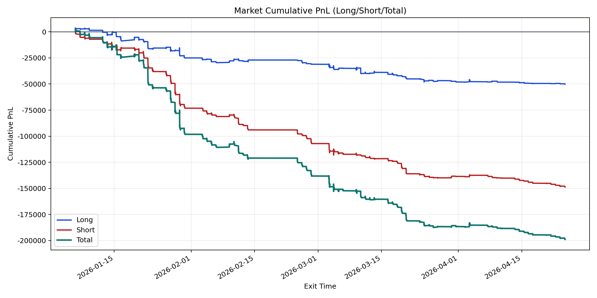
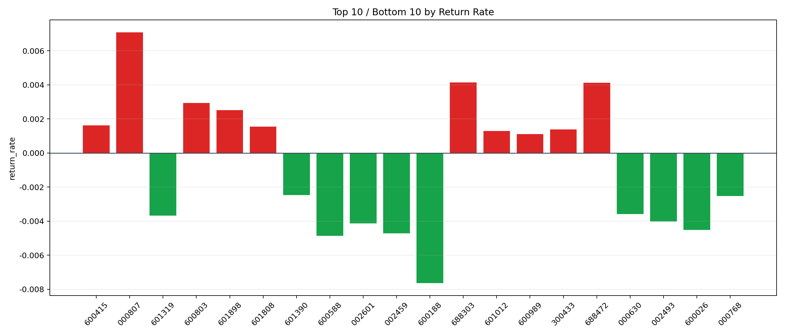

| repo_root | /home/haoranyou/data/output/dynamic_AUM_TAKER_index300 |
|---|---|
| period_months | 6 |
| period_label | 2026-01-06_to_2026-04-24 |
| start_time | 2026-01-06 10:07:22 |
| end_time | 2026-04-24 13:28:27 |
| n_trades | 7764 |
| n_symbols | 63 |
| total_pnl | -198837.3764000009 |
| long_total_pnl | -50143.46034999941 |
| short_total_pnl | -148693.91605000148 |
| total_entry_notional | 137730176.0 |
| long_entry_notional | 50091263.0 |
| short_entry_notional | 87638913.00000001 |
| total_return_rate | -0.0014436732905939284 |
| long_return_rate | -0.0010010420449969371 |
| short_return_rate | -0.0016966654532787446 |
| top_symbols_by_return | ["000807", "688303", "688472", "600803", "601898", "600415", "601808", "300433", "601012", "600989"] |
| bottom_symbols_by_return | ["600188", "600588", "002459", "600026", "002601", "002493", "601319", "000630", "000768", "601390"] |

